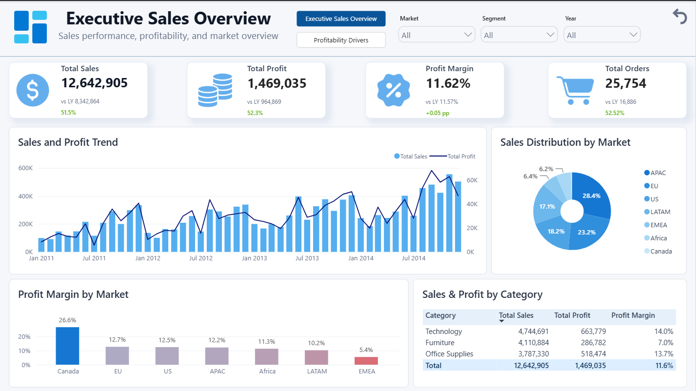
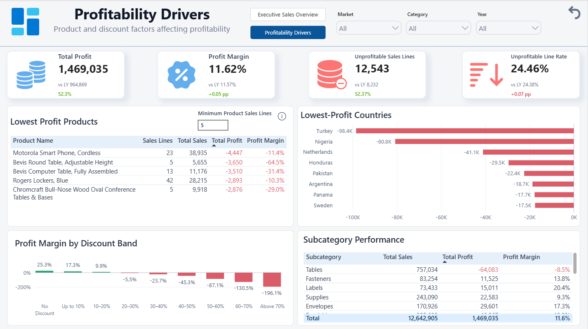

SuperStore Sales
Power BI Analytics Report
12.64M sales · 1.47M profit · 25,754 orders
Executive analysis of sales performance, profitability, product results, markets, and discount levels
Project Goal
The project was created to evaluate overall sales performance and identify the main factors associated with weaker profitability.
The two-page Power BI report combines a concise executive overview with a focused analysis of categories, subcategories,
countries, discount levels, and products requiring attention. The dataset covers sales recorded between January 2011 and December 2014.
Technologies & Tools Used
Power BI Desktop, Power Query, DAX, Dynamic Parameters, Performance Analyzer
Step by Step:
- Imported and prepared the source dataset containing 51,290 sales lines and 21 columns, standardized field names and assigned data types
- Performed data quality checks, including the confirmation that the source contains no missing values or exact duplicates, all numeric and date values convert without errors, and no shipping date occurs before its order date
- Resolved ambiguous source identifiers by identifying orders through Order ID + Order Date + Customer Name and products through Product ID + Product Name, then assigned numeric OrderKey and ProductKey surrogate keys
- Restructured the source file into DimOrder, DimProduct and FactSales tables and builded a data model with three active one-to-many relationships:
- DimDate → DimOrder
- DimOrder → FactSales
- DimProduct → FactSales
- Defined analytical concepts and rules underlying the key measures, such as sales line, order, profit margin, loss-making sales line, discount band, and eligible product
- Created 20+ DAX measures covering core performance, previous-year comparisons, year-over-year changes, loss-making sales lines, and product ranking
- Developed a dynamic parameter for controlling the minimum number of sales lines required for a product to appear in the lowest-profit ranking
- Designed two interactive report pages:
- Executive Sales Overview
- Profitability Drivers
- Added page navigation, reset buttons, dropdown slicers, cross-filtering, and a tooltip explaining the product threshold, then tested visual performance with Performance Analyzer (all visuals loaded in under approximately 420 ms)
Final Report Overview
The final report provides two analytical perspectives:
Executive Sales Overview - sales, profit, margin, and order volume with previous-year comparisons, monthly trends, and market and category performance.

Profitability Drivers - loss-making sales lines, lowest-profit products and countries, profit margin by discount band, and subcategory results.

Insights / Findings
- Sales, profit, and order volume increased in every year covered by the dataset.
Sales grew from 2.26M in 2011 to 4.30M in 2014, while profit increased from 248.9K to 504.2K. Order volume rose from 4,516 to 8,868, while the annual profit margin remained relatively stable between 11.0% and 12.0%.
- Furniture combined high sales with substantially weaker profitability.
The category generated 4.11M in sales, approximately 323.6K more than Office Supplies, but delivered only 286.8K in profit compared with 518.5K for Office Supplies. Its 7.0% profit margin was almost half the 13.7% achieved by Office Supplies. Furniture also recorded the highest loss-making sales line rate at 31.55%, compared with 23.90% for Technology and 22.39% for Office Supplies.
- Profitability declined sharply as discount levels increased.
Sales lines without a discount generated 6.99M in sales and 1.77M in profit at a 25.3% margin. In contrast, discount bands above 20% generated approximately 1.93M in sales but produced a combined loss of approximately 814.7K, equivalent to a margin of around -42.2%. The aggregated result became negative in the 20–30% discount band and deteriorated further at higher discount levels.
- Country-level losses were heavily concentrated in Turkey and Nigeria, where every recorded sales line was unprofitable.
Together, the two countries generated 162.9K in sales but recorded a combined loss of 179.2K, resulting in an aggregated margin of approximately -110.0%. All 1,378 sales lines in Turkey fell within the 50–60% discount band, while all 905 sales lines in Nigeria fell within the 60–70% band. Their combined loss was almost twice the approximately 93.0K recorded across the next three lowest-profit countries: the Netherlands, Honduras, and Pakistan.
Analytical Value
- Tracks sales, profit, margin, and order volume over time with previous-year and year-over-year comparisons
- Compares markets and product categories by sales, profit, and profit margin
- Identifies the loss-making sales lines, products, countries, and subcategories that reduce overall profitability
- Shows how profit margin changes across discount bands
- Demonstrates how a minimum sales-line threshold improves the reliability of the lowest-profit product ranking
- Provides an interactive foundation for exploring results by market, segment, category, and year
Data Limitations
The dataset does not specify a currency, so monetary values are presented without a currency symbol.
Profit is used as supplied by the source; shipping cost is not subtracted separately because the source does not confirm whether it is already included.
The dataset does not contain a reliable source order-line identifier, so repeated order-product combinations were retained.
Order and product surrogate keys were created in Power Query for this static portfolio dataset; in production they would normally be managed in a database or data warehouse.
Product rankings depend on the selected minimum sales-line threshold.
Previous-year measures shift the entire selected date context back by one year, so the clearest comparison is obtained when a single year is selected.
The relationship between discount levels and profitability is observational and does not establish causation.
Customer names are used as source attributes, and the report does not establish whether identical names always represent the same real-world customer.